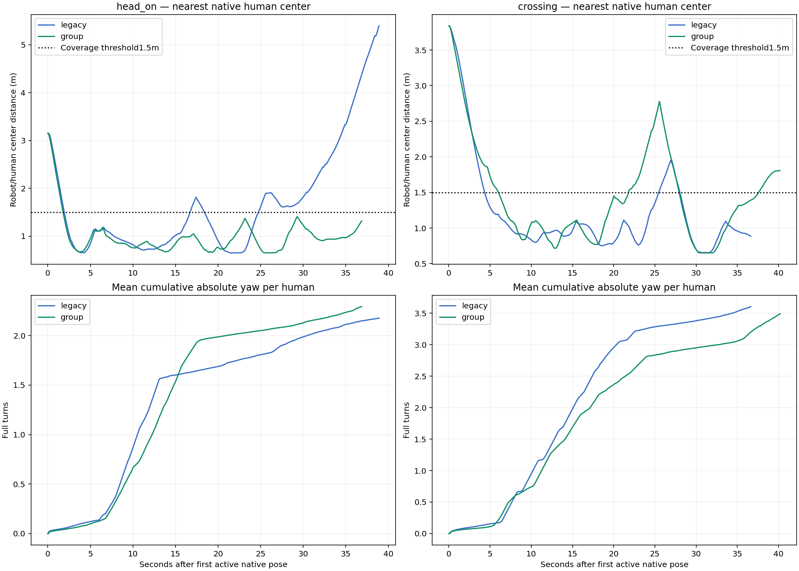
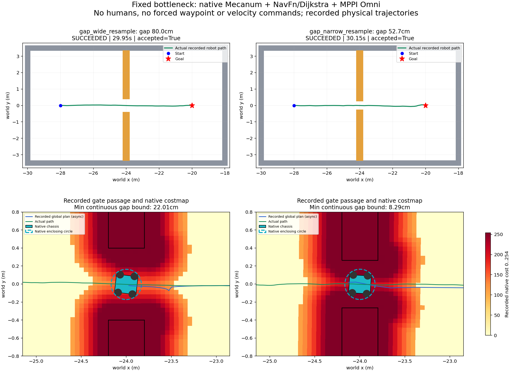
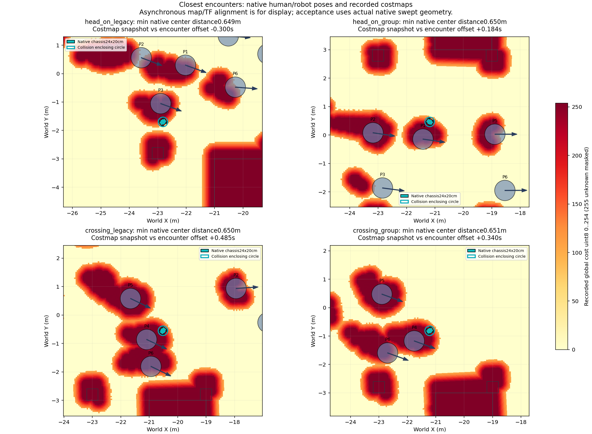

Có vòng kiểm tra đồng hồ mới
Clock đã đúng nhưng người vẫn quay bất thường; xem kết quả riêng của bước tiếp theo.
Mở báo cáo mới nhấtNhóm đi ngược chiều, cắt ngang và khe hẹp
6 lượt mới, seed45 cho người; robot Mecanum thật của project trong Gazebo. NavFn/Dijkstra + MPPI Omni horizon5s, resampling bật. Không đổi ROS mặc định.
Phạm vi lần kiểm tra này
Mỗi tình huống nhóm chạy bản cũ (legacy) và bản sửa (group_orca_v1). Vị trí, hướng và mục tiêu ban đầu giống nhau trong từng cặp; sau đó người và robot phản ứng thật với nhau, không ép chạy theo quỹ đạo.
Tiếp cận gần được tính khi có ít nhất một tâm người cách tâm robot không quá1,5m trong tổng ít nhất0,5s. Thời gian là hợp của tất cả người, không cộng trùng. Đây là tiêu chí có tương tác gần, chưa phải tiêu chí thoải mái xã hội.
6/6 lượt tới đích, audit PASS, không recovery; cả4 lượt xã hội có tiếp cận gần thực tế.
Bốn lượt gặp nhóm người
Biên hở là khoảng cách bề mặt theo vòng bao collision robot16,81cm và proxy người36cm. Mức<=1,5m chỉ dùng đo độ bao phủ tiếp cận. Không có luồng lực tiếp xúc.

Hai lượt khe hẹp với cấu hình resampling
Khe này là fixture tĩnh riêng, không có người. Robot phải đi qua lỗ mở thật tại x=-24m và tới đích; không bơm vận tốc hay waypoint.

Camera ghi thật
Tốc độ:
Ảnh RGB observer Gazebo ghi1Hz, mã hóa từ GIF gốc, giữ thời gian đứng hình. Không dùng AI sinh ảnh. Video không ghi lại bộ xương người; giao diện replay dựng dáng đi là chế độ khác.
Footprint và costmap tại lúc gặp gần nhất

Costmap uint8 gốc được đưa lên hệ world bằng pose/TF gần nhất; thời gian không đồng bộ tuyệt đối, chỉ dùng minh họa. Các số khoảng hở và tiếp cận tính độc lập từ pose Gazebo thực tế.